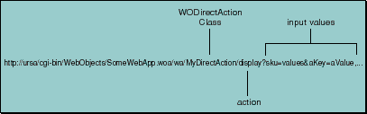

Table of Contents
Table of Contents  Next Section
Table of Contents
Next Section
Table of Contents  Previous Section
Previous Section
When the direct action request handler receives the handleRequest: message from the application, its first step is to determine what action should be performed and by what object. It does so by looking at the request URL. The URL for a direct action request looks like the one shown in Figure 27.

Figure 27. Direct Action Request URL
Since URLs can contain class names, the WODirectActionRequestHandler always checks to make sure that the class specified is a subclass of WODirectAction.
Invoking the Action
Once the direct action request handler has determined the action to be performed and which object should perform the action, the handler does the following:
With direct actions, all input values are in the WORequest object as form values. If the form method was a "GET" then the URL contains the form values.
Table of Contents Next Section